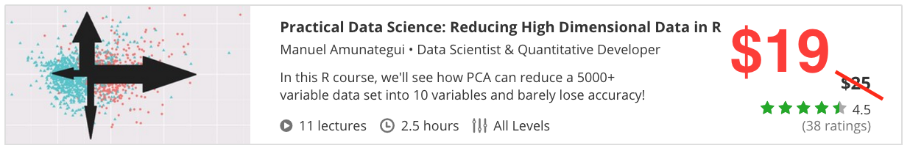
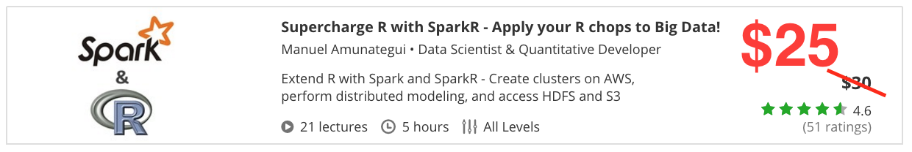
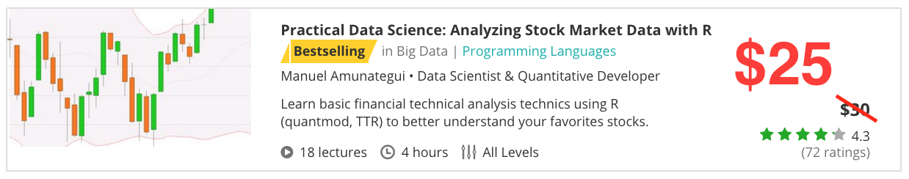

Support the Site and Check Out my Udemy Classes
Practical walkthroughs on machine learning, data exploration and finding insight.
Automating Data Exploration with R

Course on 'Automating Data Exploration with R' available at Udemy.com: - click here for $19 coupon!
In this class you will learn:
- Build a pipeline to automate the processing of raw data for discovery and modeling
- Know the main steps to prepare data for modeling
- Know how to handle the different data types in R
- Understand data imputation
- Treat categorical data properly with binarization (making dummy columns)
- Apply feature engineering to dates, integers and real numbers
- Apply variable selection, correlation and significance tests
- Model and measure prepared data using both supervised and unsupervised modeling
Reducing High Dimensional Data in R

11 lectures on 'Reducing High Dimensional Data in R' at Udemy.com - click here for $19 coupon!
You will learn:
- Understand various ways of reducing wide data sets
- Understand Principal Component Analysis (PCA)
- Control, tune and measure the effects of PCA
- Use GBM modeling to measure the effectiveness of PCA
- Reducing dimensionality with classic GBM & GLMNET variable selection
- Use ensembling techniques to find the most stable variables
Supercharge R with SparkR - Apply your R chops to Big Data!

12 lectures on 'SparkR, modeling, S3 and HDFS' at Udemy.com - click here for $25 coupon!
In this class you will learn:
- How to use R in a distributed environment
- Create Spark clusters on Amazon's AWS
- Perform distributed modeling using GLM
- Measure distributed regression and classification predictions
- Access data from csv's, json, hdfs, and S3
All examples performed on real clusters - no training wheels, single local clusters or third-party tools
Analyzing Stock Market Data with R

18 lectures on 'Quantmod and R' available at Udemy.com - click here for $25 coupon!
What is covered:
- Easily access free, stock-market data using R and the quantmod package
- Build great looking stock charts with quantmod
- Use R to manipulate time-series data
- Create a moving average from scratch
- Access technical indicators with the TTR package
- Create a simple trading systems by shifting time series using the binhf package
- A look at trend-following trading systems using moving averages
- A look at counter-trend trading systems using moving averages
- Using more sophisticated indicators (ROC, RSI, CCI, VWAP, Chaikin Volatility)
- Grouping stocks by theme to better understand them
- Finding coupling and decoupling stocks within an index